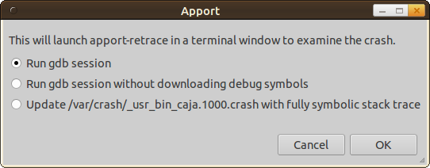
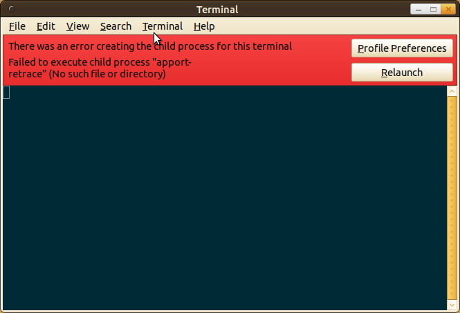
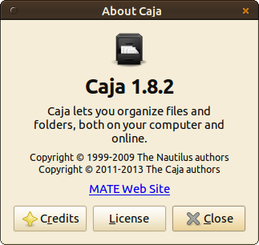
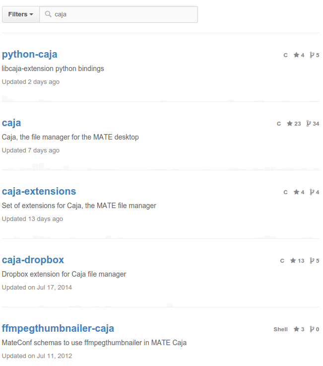
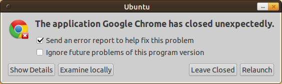
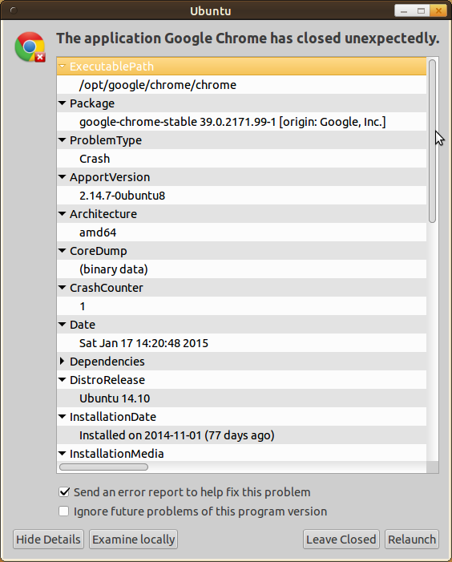
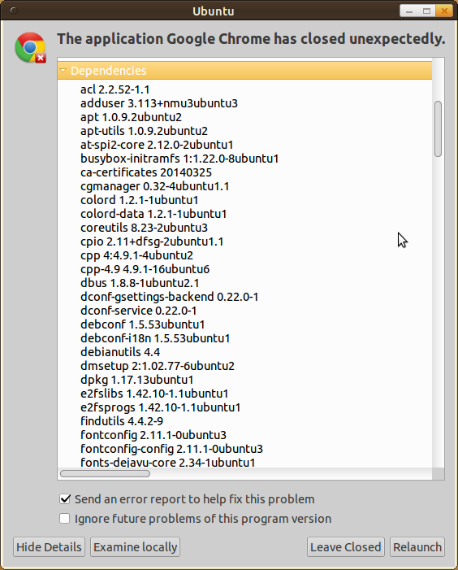
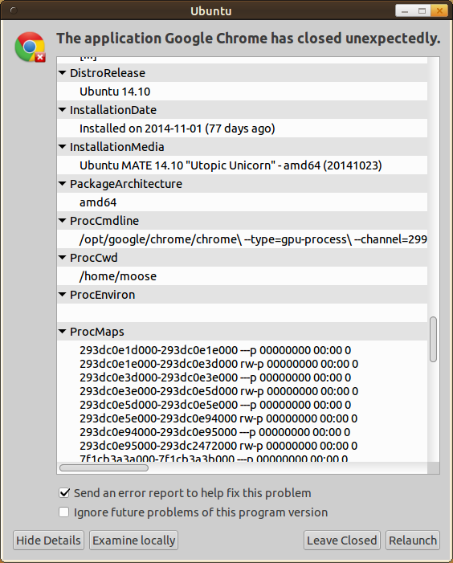
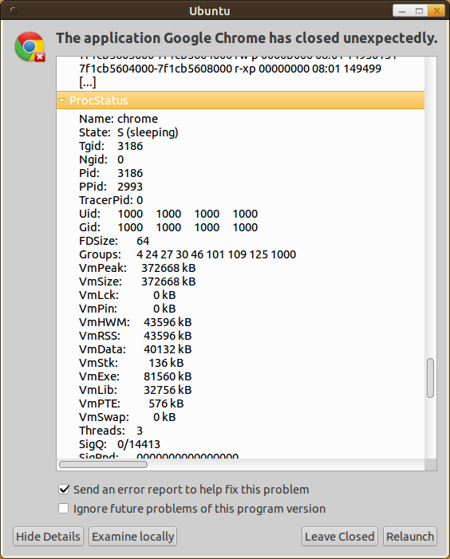

Bug reporting is extremely important. It helps developers to become aware of problems and hence get the possibility to do something about it. It is impossible to guarantee for any real, non-trivial software that it has no bugs. Even when you formally prove that it is correct, the proof might be wrong. However, when users report bugs one can become confident that the remaining bugs appear very rarely or do not cause much harm.
Reporting bugs is also important from a User Experience point of view. For me, it already helps to be able to report a bug / see that a bug was already reported. However, this is a pain in the ass for most software from a user's perspective.
I've just had that experience for Caja (the file explorer of MATE).
Caja example
Get information
Caja crashed. I just wanted to create a new text file. Then it froze for about two seconds and closed. After another one or two seconds I got a crash report window. (I forgot to make a screenshot of that, but it looks like the one in the Google Chrome example)
I clicked on something like "examine locally" - whatever that means. This is the first point I have to criticize. The user should always know or at least be able to find out what such messages mean.
I was curious, so I clicked on it. Then this appeared:
{kind=link}

This will launch apport-retrace in a terminal window to examine the crash.
That is fine.
- Run gdb session
- Run gdb session without downloading debug symbols
- Update /var/crash/_usr_bin_caja.1000.crash with fully symbolic stack trace
That is not ok. This might be good information for developers, but for normal users it is useless. There should be information when to use which one. For example:
- Which option takes most time (if there is a significant difference)?
- Is one option a superset of the other?
- Might one option contain private / secret information which I should not share?
Let's try 'Run gdb session'. By the way, 'gdb' is the GNU project debugger.
{kind=link}

Hrmpf. Seems as if I found a bug while trying to report a bug... This happens for every option.
Ok. Let's see if I can report the bug. As the automatic tools did not help, I check for a program version via Help > About:
{kind=link}

Nice! It is obvious which version I use and how the program is called (Caja 1.8.2). There is even a link to a website where I could possibly report the bug. It links to www.mate-desktop.org.
Report bug
When I search for 'bug' on www.mate-desktop.org I get to Reporting Bugs. That seems to be a blog article which explains they are moving to GitHub with a link to github.com/mate-desktop. There are many repositories, so I have to search. Hrmpf. Then I get:
{kind=link}

5 repositories. Hrmpf. I guess it is simply 'caja'. When I click on this repository, I have to click on 'issues'.
Now I am stuck. I don't know how to find a better description than "it crashed". There is certainly more information on my system, but I don't know how to get to it and I don't see any instructions on how to do so. I also don't want to waste my time searching for information on how to get information about the crash.
Google Chrome example
Just a few images...
{kind=link}

{kind=link}

{kind=link}

{kind=link}

{kind=link}

What's wrong and how to fix it
Did you notice how complicated this is for a user? This should be easier. In fact, I think if the bug reporting process is done right it could enhance the trust a user has in software, speed the fixing process up and help developers to prioritize what is important. Some basic steps could be:
- The automatic reporting tool should be created for non-developers.
- It should automatically store crash information in a place where the user can easily find it (e.g. /home/myaccount/.bugreports/caja/yyyy-mm-dd-hh-mm.xml)
- It should be stored in a format which the user can read (e.g. an XML file)
- The bug reporting website should be hosted by somebody else.
Now the last one is important in my opinion. It makes sure that users know their bugs are not deleted / removed from the public just because it makes the software look bad. One could add metrics for how confident users are, e.g. if you let users tell which software they use. In this case you can add graphs of how many users use the software and how many bugs / issues are reported. (The classification bugs and issues might also not be easy for users!)
Existing Issue Trackers
All of the following bug trackers seem to be developed for developers, not for users:
- Open Source Projects:
- Trac: Python
- Bugzilla: Perl
- Mantis Bug Tracker: PHP
- Redmine: Ruby on Rails
- Hosted Services:
- GitHub issues (e.g. for numpy)
- Google Code (e.g. for chromium)
- SourceForge (e.g. for dvdstyler)
- Launchpad (e.g. for ubuntu)
- GNU Savannah (e.g. for lordsawar)
See also: